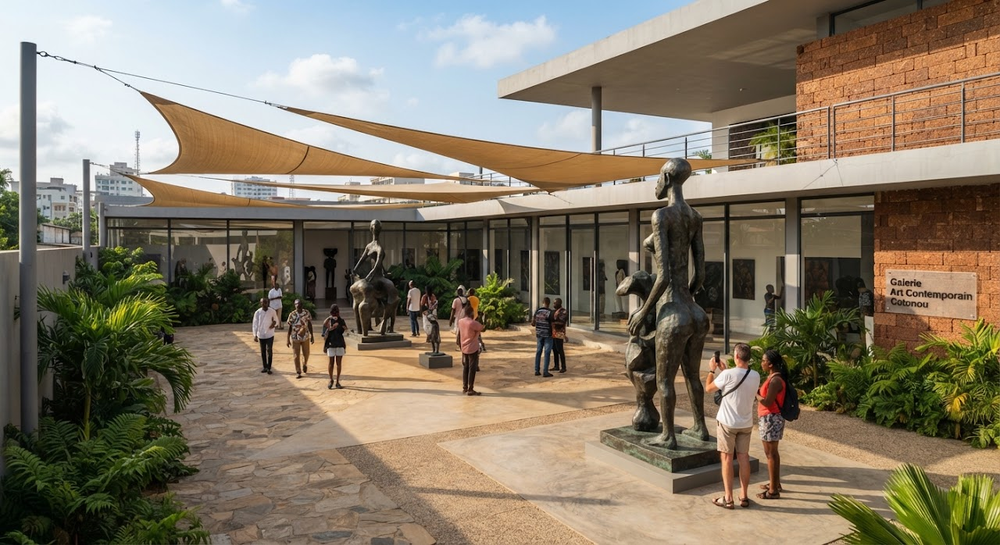

Afrique de l'Ouestplay_circleVidéo incluse
11 min de lectureComment Cotonou s'affirme comme une capitale des arts contemporains
Depuis la restitution par la France de 26 œuvres du trésor royal d'Abomey en 2021, la métropole béninoise voit fleurir fondations, résidences et galeries.